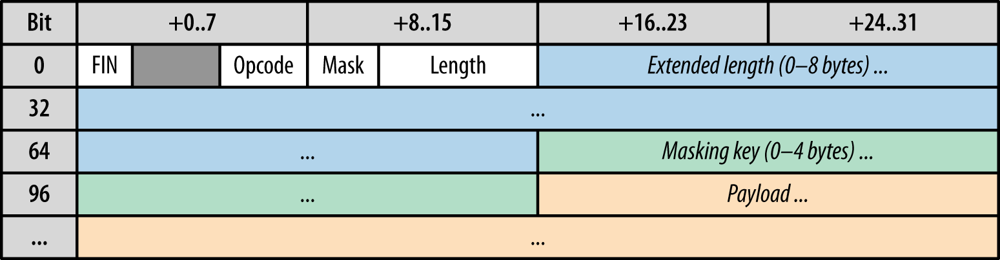

WebSockets Internals
aorgish
Problem
Historically, creating web applications that need bidirectional communication between a client and a server (e.g., instant messaging and gaming applications) has required an abuse of HTTP to poll the server for updates while sending upstream notifications as distinct HTTP calls
Lot of connections
HTTP overhead
RFC 6202 Known Issues and Best Practices for the Use of Long Polling and Streaming in Bidirectional HTTP
A simpler solution would be to use a single TCP connection for traffic in both directions. This is what the WebSocket Protocol provides. Combined with the WebSocket API [WSAPI], it provides an alternative to HTTP polling for two-way communication from a web page to a remote server.
The main goal of the protocol is to allow bidirectional communication between an application running within a UA such as a web browser, and an application running on a distant server, not limited by the domain-origin or any other policy.
SubGoals
- Coexist with HTTP servers on ports 80 and 443
- Differentiate from HTTP enough to cause WS clients to know a WS server from HTTP server
- Make sure that intermediaries do not confuse WS data content for valid HTTP requests
Handshake
ws://www.domain.com/path
wss://www.domain.com/path
Client request
GET /chat HTTP/1.1
Host: server.example.com
Upgrade: websocket
Connection: Upgrade
Sec-WebSocket-Key: dGhlIHNhbXBsZSBub25jZQ==
Origin: http://example.com
Sec-WebSocket-Protocol: chat, superchat
Sec-WebSocket-Version: 13
Server response
HTTP/1.1 101 Switching Protocols
Upgrade: websocket
Connection: Upgrade
Sec-WebSocket-Accept: s3pPLMBiTxaQ9kYGzzhZRbK+xOo=
Sec-WebSocket-Protocol: chat
WS Frame
Opcodes
- x0 denotes a continuation frame
- x1 denotes a text frame
- x2 denotes a binary frame
- x3-7 are reserved for further non-control frames
- x8 denotes a connection close
- x9 denotes a ping
- xA denotes a pong
- xB-F are reserved for further control frames
Ping-Pong
SubProtocols
Sec-WebSocket-Protocol: protocol-list
WebSocket Subprotocol Name RegistryWAMP
"The WebSocket Application Messaging Protocol"
- Publish & Subscribe (PubSub)
- Remote Procedure Calls (RPC)
STOMP
"Simple Text Orientated Messaging Protocol."
STOMP provides an interoperable wire format so that STOMP clients can communicate with any STOMP message broker to provide easy and widespread messaging interoperability among many languages, platforms and brokers.
Long Polling vs WebSockets
600K connections
- AWS M3.xlarge server: CPU x 4 (Intel Xeon E5-2670 v2 Ivy Bridge), RAM 30Gb
- Nodejs + Websockets/ws + Sticky-session